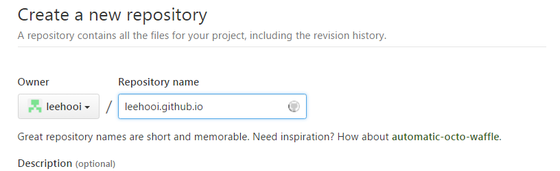
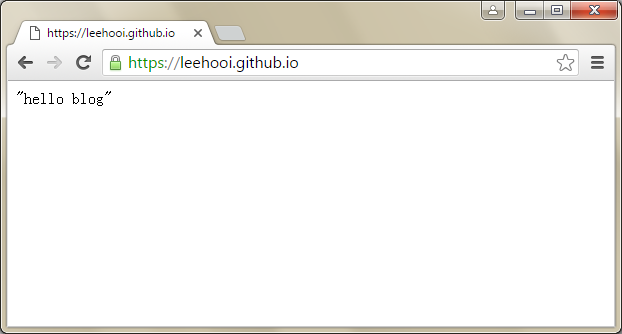

我从事软件开发工作已经若干年，一直没有写博客是因为常用的东西已经记到脑子里了，不常用的也没必要记到脑子里。 当然，最主要的原因还是因为懒。 现在想写博客是想把自己的知识固化下来，也能帮助遇到同样问题的人。 现在免费的、开源的博客系统已经有许多，并且提供丰富的功能和模板，让我挑花了眼。 最终我决定自己搭建一个功能单一的轻博客。 这个文章系列会介绍我是一步一步如何搭建一个轻博客的。 如果你已经具备了一些简单的前端开发的知识，那么就可以轻松理解这里的文章并搭建属于自己的博客。
去Github Pages会看到详细的向导，介绍如何创建一个托管页面的仓库。 当然，创建仓库的前提已经注册了Github的账号。 登录Github后创建一个仓库，值得一提的是仓库的名称必须是username.github.io的格式。 可能有些人看到这个还是不清楚怎么命名仓库。 这里举个栗子，我的Github用户名是leehooi，那么仓库的名称就是leehooi.github.io，创建好的git仓库地址就是https://github.com/leehooi/leehooi.github.io.git。 
仓库创建好了之后，在本地电脑由仓库地址(https://github.com/leehooi/leehooi.github.io.git)克隆一个本地仓库。 在本地仓库根目录创建一个index.html的文件，里面随便写几个字符。 完成后提交并且push。 在浏览器输入网址leehooi.github.io便可以看到网址首页里面是刚才输入的几个字符。

至此，博客的原型已经完成，并且可以在其他地方通过互联网访问了(虽然没人想访问这样简陋的网站)。
后面的系列会介绍如何自动生成html。